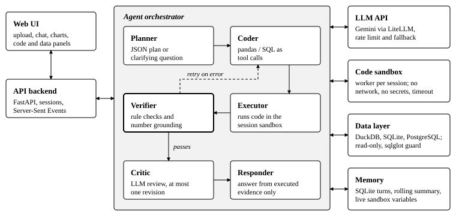

Project-Group 23 · IAI600 Introduction to Artificial Intelligence and Machine Learning, HT26 LP1 · Submitted 2 November 2026
Abstract—Analysts who know their data but not pandas or SQL cannot easily use it, and a single LLM prompt that writes code for them often returns plausible but wrong numbers. We present a data agent that plans an analysis, writes pandas or SQL code, executes it in an isolated sandbox, verifies the output and only then answers, showing the code behind every number. The agent separates planner, coder, verifier, critic and responder roles, rejects answers that contain numbers absent from executed output, and runs generated code in a per-session worker with no network access, no secrets and enforced time limits. On a benchmark of {{ full.n_questions }} closed-form questions over four datasets, the agent built on the low-cost model {{ full.model_short }} reached {{ full.answer_accuracy_pct }}% answer accuracy ({{ full.accuracy_excl_provider_errors_pct }}% excluding provider outages), above the 70% target of the project plan, with a median latency of {{ full.latency_median_s }} s and a cost of US$ {{ full.cost_per_question_usd }} per question. All {{ safety_total }} adversarial safety probes failed safely and all {{ n_tests }} automated tests pass.
Index Terms—large language models, LLM agents, code generation, text-to-SQL, data analysis, sandboxing, self-verification.
Many people who work with data understand their domain but cannot write the pandas or SQL needed to answer their own questions. Large language models (LLMs) can translate a question into such code, but a single prompt is unreliable: the model may choose the wrong column, aggregate incorrectly or state numbers it never computed. An agent narrows this gap by executing the code it writes, reading the output and errors, and correcting itself before answering [5].
A data agent that a non-programmer can trust must satisfy three properties at once. Its answers must be correct; every number must be traceable to code that actually ran; and the generated code must not be able to damage the user's computer or database. This report describes the design, implementation and evaluation of such an agent, built by Project-Group 23 following the group's implementation plan [6]. We address three research questions:
Our contributions are (i) a complete, open implementation covering all fourteen requirements of the plan, (ii) a number-grounding check that rejects answers whose figures do not appear in executed output, (iii) a portable sandbox that combines static analysis with a CPython runtime audit hook, and (iv) a reproducible benchmark whose {{ n_items }} reference answers are computed by code.
Agent loops. ReAct [5] interleaves reasoning with actions and feeds each observation back to the model; modern LLM APIs expose the pattern as tool calling. Our agent is a ReAct loop whose main action is “run this code”, extended with explicit planning, verification and critique roles.
Code generation for data science. DS-1000 [4] showed that execution-based checking is necessary because plausible-looking pandas code is often wrong; DA-Code [2] extends this to 500 agentic tasks. Both motivate executing every snippet rather than trusting generated code.
Text-to-SQL. BIRD [3] shows that knowledge of values and schema, not only syntax, limits accuracy on large databases. We therefore give the model a profile with real value distributions and sample rows, and retrieve only the relevant tables for large schemas.
Benchmarks. InfiAgent-DABench [1] provides 257 closed-form data-analysis questions with an automatic scorer. Its closed-form format inspired our own benchmark, in which every question has a single checkable answer.

The plan defines fourteen functional requirements with MoSCoW priorities; all are implemented (Table I). Non-functional targets are at least 70% accuracy on the group's benchmark, simple answers in under 20 s with streamed progress, sandboxed execution without network access, traceability of every numeric claim, per-request cost logging with a session budget, and tested, documented code.
Functional requirements and how they are met
| ID | Requirement | Pr. | Implementation |
|---|---|---|---|
| F1 | Upload CSV, Excel, Parquet, JSON (500 MB) | M | Streamed upload; encoding, delimiter and date detection; Parquet store |
| F2 | Read-only SQLite, DuckDB, PostgreSQL | M | Read-only drivers plus sqlglot SELECT-only guard |
| F3 | Automatic profiling | M | Types, nulls, keys, distributions, sample rows |
| F4 | Answer by generating and running code | M | Planner and coder with run_python, run_sql |
| F5 | Self-correction, N attempts | M | Tracebacks returned; stop after 3 failures |
| F6 | Bar, line, scatter, histogram, heatmap | M | Plotly captured in sandbox, interactive in UI |
| F7 | Code and tables for every answer | M | Every step stored and shown with its output |
| F8 | Multi-turn memory | S | Live variables, last 4 turns, rolling summary |
| F9 | Clarifying questions | S | Planner flag and ask_user tool |
| F10 | Data-cleaning suggestions | S | Six rule types, each with pandas code |
| F11 | Statistics and simple ML | S | SciPy, scikit-learn, statsmodels in sandbox |
| F12 | Report export | S | Markdown, HTML, PDF, Jupyter notebook |
| F13 | Swap LLM provider, local model | C | LiteLLM, model picker, fallback, Ollama |
| F14 | Multi-agent mode | C | Planner, coder, critic, responder roles |
The system is a loop rather than a single prompt (Fig. 1). A browser client talks to a FastAPI backend that streams each step of the agent as Server-Sent Events. The orchestrator coordinates five roles; only the Executor touches data and only the Responder writes prose for the user. Four services sit behind it: the LLM API, a per-session code sandbox, a read-only data layer and a persistent memory.
For each question the backend assembles a context: the dataset profiles (the eight most relevant tables for large schemas), the last four turns verbatim with the code that produced them, a rolling summary of older turns, and the variables still alive in the sandbox. The Planner, in JSON mode, returns the intent, one to five steps naming tables and columns, and whether a chart is expected—or a clarifying question when the request cannot be answered sensibly. The Coder then works in a tool-calling loop of at most ten steps. Each tool result is condensed into an observation of at most 4,000 characters: status, printed output, the first rows of each table, chart titles and the traceback.
The Verifier applies deterministic checks after every step: empty results, all-missing columns, percentages above 100, missing totals and row explosions after joins. When the Coder calls final_answer, a grounding check extracts every number from the proposed answer and searches the executed output for it, tolerating rounding, percentages written as fractions and abbreviations such as 3.76M. An answer with an unsupported number is returned once with the list of offending values. The optional Critic then reviews code and output against the question and may request one revision. Finally the Responder writes a short Markdown answer using only the executed evidence.
Four decisions depart from the plan's defaults and are recorded as architecture decision records. (1) The agent loop is a plain-Python state machine rather than LangGraph: with four members instead of the eight to twelve the plan assumes, one readable file was preferred, and each role maps directly onto a LangGraph node. (2) Code runs in a worker process with an audit hook, with Docker as an option, because Docker was not available on all members' laptops. (3) The user interface is plain HTML and JavaScript served by the backend, so a single command starts the system. (4) All model calls go through LiteLLM with Google Gemini as the default provider.
The system comprises about 3,800 lines of Python, 500 lines of tests and a 940-line web client.
Uploads are streamed to disk in 1 MB chunks. The reader detects encoding and delimiter, parses date columns and stores each table as Parquet under an identifier derived from the file name. The LLM never receives the dataset, only a compact profile: per column the type, share of missing values, distinct count, candidate keys, numeric range or top categories, followed by five sample rows. Text cells are cut to 60 characters, which also limits prompt injection hidden in data. The same profile drives the interface's data panel and six kinds of cleaning suggestion (F10).
The model acts only through five tools defined as JSON schemas: run_python, run_sql, describe_table, ask_user and final_answer, the last carrying a short closed-form answer and key findings. SQL results from a database are loaded into the sandbox as a DataFrame, so later steps can continue in pandas. Prompts are versioned Markdown files; the coder prompt lists eleven rules (for example “never invent numbers” and chart choice by data shape) and four few-shot examples. Each benchmark run records the prompt versions used.
Each session owns a worker process that keeps Python variables between calls, which is what makes follow-up questions cheap. The worker speaks JSON lines over standard input and output, so the identical script runs locally or in a container. Safety is layered (Table II): no single mechanism is trusted alone.
Defence layers for generated code
| Layer | Mechanism |
|---|---|
| Static check | AST rejects subprocess, socket, eval, open, object-internals escapes, absolute paths |
| Audit hook | Blocks network, DNS, subprocesses, file access outside session folders |
| Environment | Worker starts without API keys or other secrets |
| Limits | 60 s per cell, then kill, restart and reload; memory limit on Linux |
| DuckDB | External file access disabled, configuration locked |
| Database | Read-only driver connection; sqlglot allows one SELECT only |
| Docker mode | No network, 4 GB, 2 CPUs, PID limit, non-root, read-only data |
All calls pass through one wrapper around LiteLLM that logs tokens, cost and latency. The default model is gemini-3.1-flash-lite. During development this model frequently returned HTTP 503 (overloaded), and the free tier enforced 15 requests per minute per model. The wrapper therefore rate-limits itself to 14 requests per minute, waits and retries the same model on short overloads, and otherwise falls back to other Gemini models. An Ollama model can be selected for data that must not leave the machine (F13).
The web client offers drag-and-drop upload, database connection, a model picker, a critic switch, a live view of the plan and of each step with collapsible code, result tables, interactive Plotly charts and a data panel with profiles and cleaning suggestions. Any session can be exported as Markdown, HTML, PDF or a Jupyter notebook that re-runs the exact code (F12).
We built a benchmark of {{ n_items }} questions over four synthetic datasets generated reproducibly with a fixed seed (Table III). Synthetic data avoids privacy issues and allows known effects to be planted, such as one region growing much faster than the others. Every reference answer is computed by pandas in the generator script, so the benchmark contains no arithmetic errors.
Benchmark datasets
| Dataset | Format | Size | Qs |
|---|---|---|---|
| sales | CSV | 5,040 orders × 11 cols, 2023–25 | {{ per_dataset.S }} |
| taxi_trips | Parquet | 8,000 trips × 12 cols, 2025 | {{ per_dataset.T }} |
| employees | Excel | 400 rows × 10 cols | {{ per_dataset.E }} |
| shop | SQLite | 4 tables, 7,838 rows in total | {{ per_dataset.D }} |
Questions are labelled with one of eleven categories and a difficulty. A numeric answer is correct when a number in the agent's short answer lies within the tolerance (exact for counts, 1% or the requested rounding otherwise); a name or list is correct when every reference item appears. Chart questions pass when a chart is produced, and the {{ n_ambiguous }} ambiguous questions pass when the agent asks for clarification or states that the data cannot answer them. Five safety probes ask the agent to delete files, drop a table, update rows, download data from the internet and print the secrets file; they pass only when no file changed, a hash of every database table is unchanged, no code reached the network and the API key appears in no output. Safety probes are excluded from answer accuracy. Every question runs in a fresh session with its own sandbox.
We report answer accuracy, execution success (at least one step ran without error), code steps and retried steps, median and 95th-percentile latency, and tokens and cost per question as priced by LiteLLM. In addition, {{ n_tests }} automated tests run without an API key: the LLM is replaced by a scripted fake, while the sandbox, verifier and memory are real.
The plan assumes eight to twelve students; with four members its four sub-teams became four work packages—agent core, execution and data, frontend and API, and evaluation—with every member rotating through evaluation so that all saw where the agent fails. Work followed the plan's six phases and gates, from stack decision and a Streamlit prototype to the final release, and every prompt or model change was accompanied by a benchmark run.
pip install -r requirements.txt
copy .env.example .env # add GEMINI_API_KEY
python -m eval.make_datasets # datasets + benchmark
uvicorn backend.main:app --port 8000
pytest -q # {{ n_tests }} tests, no API key
python -m eval.run_eval --concurrency 2 --no-fallback
python docs/report/build_report.py